La pollution est la détérioration de l’environnement par des substances, des déchets ou autres nuisances diverses. On peut distinguer deux types de pollution.
La première est la pollution naturelle. Elle s'exprime sous la forme du rejet de gaz lors d’une explosion volcanique ou de la radiation innée de certaines roches. Cependant, la pollution naturelle est un phénomène négligeable comparé à la pollution artificielle.
En effet, la pollution artificielle a débuté au moment où l’Homme a mis fin à son mode de vie nomade au profit d’un mode de vie basé sur l’agriculture et l’élevage.
L’irrigation massive pour l’agriculture a par exemple, en Mésopotamie, provoqué une salinisation des sols empêchant une majorité de formes de vie végétale de se développer.
D’autre part, l’urbanisation, l’élevage et le manque d’hygiène du passé ont provoqué la contamination bactériologique et virale ou l’insalubrité de multiple nappes phréatiques.
Cette pollution s’est développée brusquement lors du XIXème siècle à cause de la révolution industrielle. Cette dernière a décuplé la production de déchets de l’humanité ainsi que ses besoins énergétiques, palliés par les énergies fossiles.
Plus récemment la démocratisation des matières plastiques pour le grand public dans les années 60 a provoqué de nouvelles catastrophes écologiques dont une grande majorité qui sont encore présentes de nos jours.
La Pollution Des Sols
La pollution des sols est un terme générique qui regroupe tout ce que l’Homme rejette volontairement ou involontairement dans les sols. Elle regroupe les polluants de la taille de l’ordre de grandeur de l’Homme, les différentes molécules utilisées dans différents produits de l’Homme qui ne se trouvent pas dans la nature ou pas dans les mêmes proportions dans les sols, et les particules radioactives.
La Pollution Visible
La pollution visible regroupe les déchets que nous laissons dans la nature. Cette dernière est directement liée à la conscience des individus. En effet cette dernière existe principalement par paresse de la population qui préfère jeter des déchets dans la nature plutôt que dans un lieu prévu à cet effet tel qu’une déchèterie. Cela peut donner dans les cas les plus extrêmes des décharges sauvages.
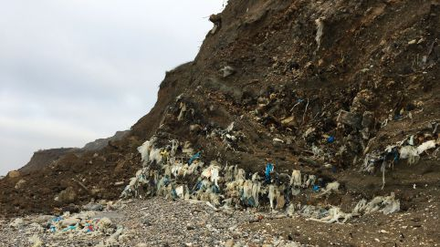
Ancienne décharge sauvage du Havre
L'existence de décharges sauvages est d’autant plus problématique quand ces dernières apparaissent dans des pays développés car ces derniers ont les moyens de sensibiliser la population à ces problèmes et la possibilité de traiter les déchets que leur population produit.
De plus, nos déchets ne disparaissent pas rapidement de façon naturelle mais sur des dizaines voir des centaines d’années, libérant de multiples substances chimiques qui provoquent de nombreux risques sanitaires pour toute la biodiversité, y compris l’Homme.
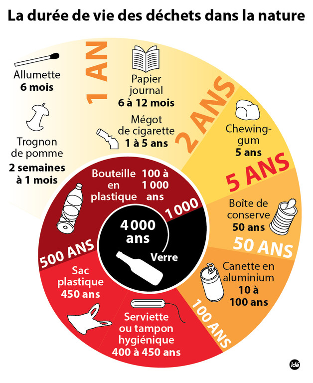
Ces décharges peuvent, en outre, être vecteurs d’infections pathogènes. Par exemple l’eau stagnante qui est issue de nos déchets est un nid idéal pour les moustiques. A première vue, cela peut sembler trivial jusqu'à ce que l’on se rappelle que les moustiques sont vecteurs de plusieurs maladies tel que le paludisme , la dengue , …. . D’autre part, l’eau stagnante est aussi le lieu idéal pour le développement des bactéries qui provoquent notamment des diarrhées ou des gastro-entérites, maladies qui peuvent être mortelles chez les plus vulnérables d’entre nous.
De surcroît, ces décharges contiennent généralement des objets coupants pouvant engendrer des blessures pour les individus, humains ou animaux, les exploitants. Ces lésions peuvent ensuite s'infecter, ce qui peut provoquer l’amputation d’un membre voire la mort dans le pire des cas.
Dans un autre registre la pollution liée aux guerres reste un phénomène préoccupant pour le monde. De nombreuses armes de guerre sont retrouvées dans la nature. Cela peut aller de la munition en plomb, qui est une substance cancérigène, aux carcasses de véhicules.
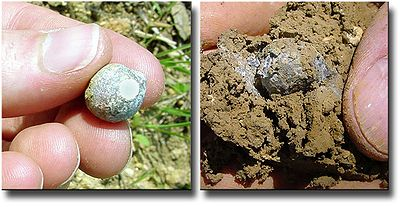 Munition de plomb trouvée dans la nature
En France, nous avons la zone rouge. La zone rouge est un triste vestige de la première guerre mondiale. C’est une zone considérée comme trop dangereuse pour y habiter ou y faire d’autres activités telles que de l’agriculture. En effet, la zone rouge contient de nombreux obus qui n’ont pas explosé lors de la guerre et qui peuvent donc exploser à tout moment. D’autre part, elle contient aussi des eaux contaminées par les agents chimiques utilisés lors des combats ou par les cadavres encore enfouis dans le sol.
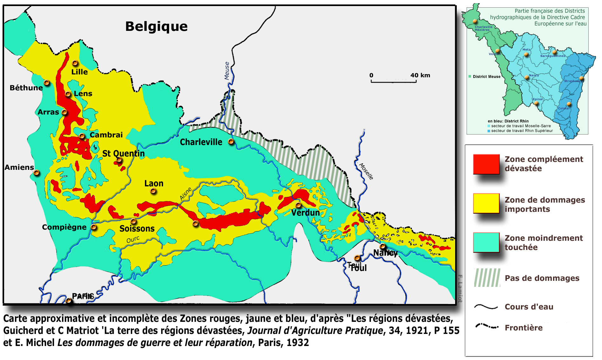
Carte de la zone rouge en France
Enfin, les mines terrestres sont l’un des plus gros problèmes liés aux zones ayant eu récemment des conflits armés. En effet ces dernières sont cachées sous terre, de façon similaire aux obus n’ayant pas explosés. Cependant ces dernières sont moins facilement détectables que les obus. A la fin du conflit, elle sont généralement laissées sur place puisqu’elles sont très difficiles à désamorcer. Cela provoque chaque année des morts du côté de l’homme, et sans doute plus du côté des animaux.
La Pollution Chimique
La pollution chimique regroupe les éléments de taille moléculaire présents dans les sols de façon artificielle. Les principaux vecteurs de cette pollution sont les pesticides.
Les pesticides sont des substances ayant pour but d’éradiquer des espèces considérées comme nuisibles d’un terrain. Ces nuisibles sont généralement des variétés de plantes, des insectes, des parasites et des champignons. Ils sont une solution efficace et rentable. Cependant, “Un grand pouvoir implique de grandes responsabilités”( Benjamin Parker dans Spider Man). Malheureusement, ces responsabilités sont souvent ignorées par les producteurs des pesticides au détriment des agriculteurs les utilisant. Ces derniers se retrouvent à utiliser des produits chimiques pouvant provoquer des cancers et autres problèmes pouvant avoir atteinte à leur vie. L’un des derniers scandales est celui du créateur de pesticides Monsanto.
D’autre part, les pesticides ne touchent pas exclusivement à la santé des agriculteurs. En effet, ils touchent aussi le consommateur. Le consommateur est empoisonné petit à petit sous la forme de résidus qui sont restés dans le produit. Sur le long terme, cette consommation de pesticides augmente la probabilité de développer des cancers, d’avoir des problèmes d’infertilité, d’avoir un système immunitaire affaibli. Malheureusement, les personnes les plus vulnérables vis à vis des pesticides restent les bébés et enfants. En effet, en plus des dangers listés plus haut, ces derniers risquent aussi d’avoir des malformations congénitales et des problèmes neurologiques.
Récemment, dans le cas des bébés qui sont nés sans bras, le REMERA (registre des malformations en Rhône-Alpes) soupçonne que les pesticides sont les coupables. Cependant cette affirmation est à prendre avec des pincettes car l'enquête à propos de ce phénomène est encore en cours.
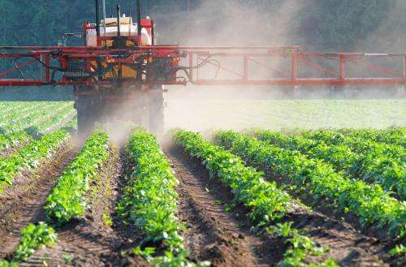
Epandage de pesticides
D’autre part , l’eutrophisation, l’utilisation massive d’engrais, dans le cadre de l’agriculture intensive introduit une trop grande quantité de nutriments. Cela peut provoquer une saturation d’éléments nutritifs ce qui “asphyxie” les êtres vivants. Les éléments principalement concernés par cela sont l’azote et le phosphore. Ces derniers peuvent avec le temps aller contaminer les nappes phréatiques présentes dans le sol. D’autre part ce phénomène est lié à l’acidité des sols, ce qui réduit aussi la résistances des plantes dans ces milieux, voire empêche leur développement, ce qui a aussi un impact important sur la biodiversité.
Enfin, les décharges sauvages libèrent de nombreuses particules au cours de leur existence. En fonction de ce qu’elles contiennent, elles libèrent des hydrocarbures lorsqu’elles contiennent des déchets plastiques, des métaux lourd dans le cas de produits ménagers, … .
La Pollution Radioactive
La France est une nation plutôt proche du nucléaire. On pourrait même dire qu’elle est la numéro 1 du domaine. En effet, 78% de notre électricité a pour origine une centrale nucléaire grâce à nos 58 réacteurs éparpillés dans le pays, faisant de nous le pays ayant le plus de réacteurs par habitant.
L’énergie produit est peu chère et, sur le papier ne pollue pas. Pas de rejet de gaz à effet de serre, pas de consommation faramineuse de combustible. L’énergie fossile parfaite ? Non ! En effet cette énergie pollue d’une manière bien à elle : par la radioactivité.
On peut séparer en deux parties la pollution radioactive. La première étant la pollution accidentelle, et la seconde étant la pollution suite au déchets.
Au cours de l’histoire , il y a eu 7 grandes catastrophes nucléaires, les deux plus connues étant Fukushima et Tchernobyl . Dans les deux cas, une catastrophe écologique s’en est suivie.
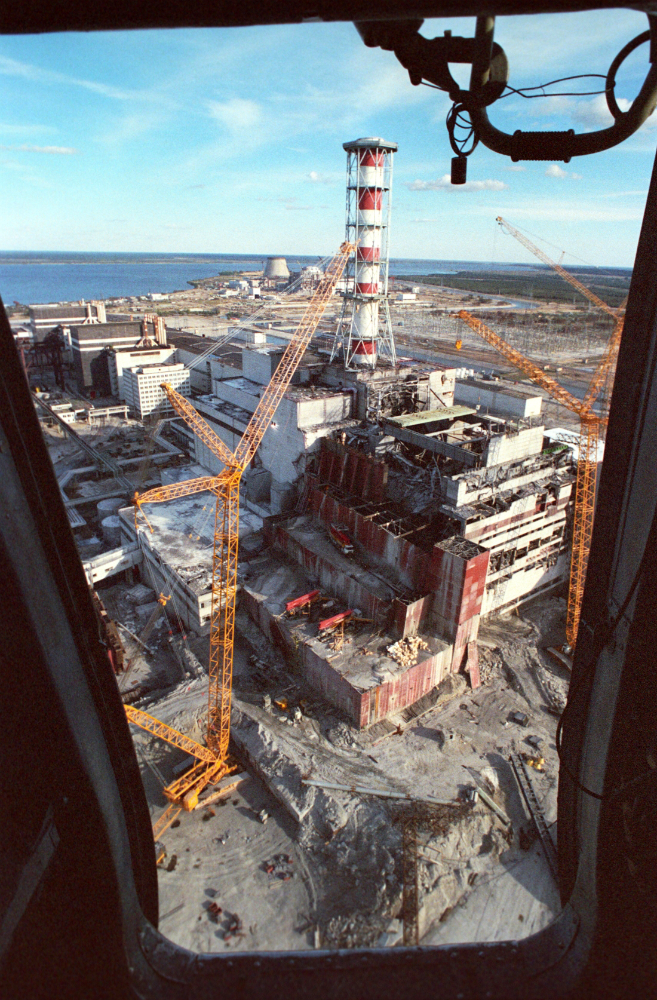
Centrale de Tchernobyl
Dans le cas de Tchernobyl, qui s’est produite le 26 avril 1986, on recense 150 000 km² de territoires contaminés et plus de 2.5 millions d’Ukrainiens encore victimes de la catastrophe de nos jours. Les répercussions se sont senties aux quatre coins de l’Europe à l’époque avec plus de 8 millions de personnes exposées aux radiations d’après les Nations Unies.
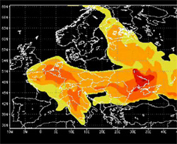
Carte du nuage radioactif issu de la catastrophe de Tchernobyl
30 ans après la catastrophe, de nombreuses zones autour de Tchernobyl sont inhabitables et prohibées d’entrée.
Cependant, il ne faut pas se leurrer, la catastrophe de Tchernobyl est loin d’être finie. En effet une des substances les plus toxiques réside encore au coeur de la centrale: la patte d'éléphant.
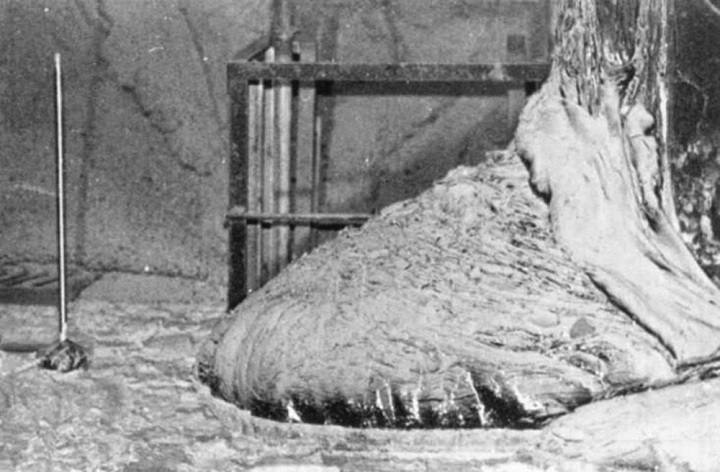
photo de la patte d'éléphant
La patte d’éléphant est ce qui reste du coeur du réacteur. Durant l’accident, ce dernier, suite à l’énorme température produite, s’est mis à fondre, durant son pic de radioactivité, rester quelques minutes à côté de cette dernière aurait provoqué votre mort. De nos jours, les chance de survie des personnes étant à son contacte ont légèrement augmenté. Cependant, elle n’en reste pas moins la substance la plus radioactive sur terre.
Les accidents ne sont cependant pas la seule cause de pollution radioactive. En effet, les armes nucléaires ont été, par le passé envisagées dans le milieu de l’excavation et de la construction. Ces projets ont été abandonnés, cependant des vestiges de ces idées se trouvent encore au Kazakhstan, au lac Chagan.
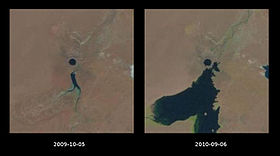
Image du lac Chagan : le lac circulaire a été créé par l’explosion d’une bombe atomique souterraine
D’autre part, comme dit précédemment, les centrales nucléaires rejettent des déchets qui sont radioactifs. Ces derniers doivent alors être traités et ensuite entreposés dans des installations ressemblant à des bunkers pour que personne ne touche aux matériaux radioactifs avant qu’ils ne se décontaminent naturellement, c’est à dire après plusieurs dizaines de milliers d’années pour certains.
On peut alors se poser la question suivante: Comment sceller ces éléments radioactifs durant un temps nécessaire sans que les Hommes, dans le futur, tentent de les ouvrir ? Car il est probable que dans 5 000 ans les langues parlées par les Hommes soient très différentes de celles parlées actuellement. Cela va aussi de soi avec les idéogrammes.
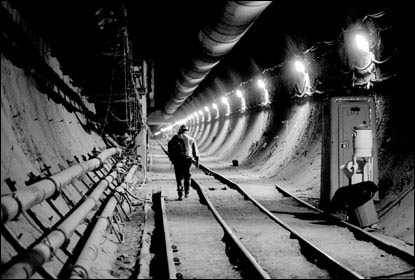
Enfin, en pollution, on peut évoquer les différentes armes nucléaires égarées par les puissances nucléaires, majoritairement les Etats Unis et l’ex URSS. Le fait que des armes de destruction massive nucléaires peuvent se trouver dans la nature n’est pas très rassurant car elles pourraient provoquer une catastrophe écologique si l’une d’entre elle venait à exploser.
La Pollution Des Eaux
Les Déchets
Les déchets présents dans les eaux du globe ont 2 principales origines, la première étant l’origine tellurique, ce qui veut dire qu’ils ont une origine terrestre, et la seconde étant les déchets directement jetés dans l’eau sans passer par l’étape continentale.
D’après les Nations Unies, 80% de la pollution marine possède une origine tellurique.
Les principaux polluants des eaux sont l’agriculture, l’industrie manufacturière, les zones portuaires, les exploitations minières et les villes. Les eaux usées, issues de l’agriculture provoquent aussi, suite à leur trop grande concentration de nutriments des zones dites mortes, ce qui empêche la vie marine de s’y développer et détruit donc des écosystèmes.
Cependant, les eaux usées ne sont pas les seules coupables. En effet, de nombreux déchets de nos décharges, majoritairement sauvages, se retrouvent dans l’eau aux quatre coins du globe. Les principaux coupables sont les plastiques. Chaque année, nous versons 6 500 000 000 kilogrammes de plastiques dans les océans. Ce plastique, suite aux courants, se rassemble en multiples “îles” à travers le globe nommé gyres. Ces gyres peuvent aller jusqu'à 30 mètres de profondeur.
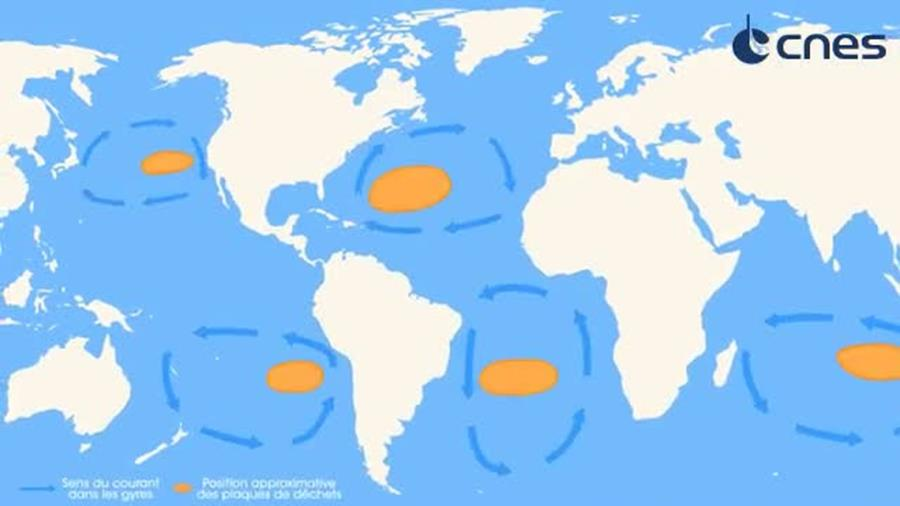 Carte des gyres
Les animaux marins ont du mal à distinguer les plastiques de leur nourriture. C’est pour cela que l'on retrouve un grand nombre d’entre eux avec un produit plastique dans l’estomac, ce qui peut leur être mortel. D’autre animaux se coincent dans nos déchets qui sont à la dérive. Ces déchets limitent leurs mouvements, ce qui peut les empêcher de chasser. Dans d’autre cas, les déchets les étouffent petit à petit au fil de leur développement. D’après les Nations Unies, plus d’un million d’animaux marins meurent de ces causes, par année.
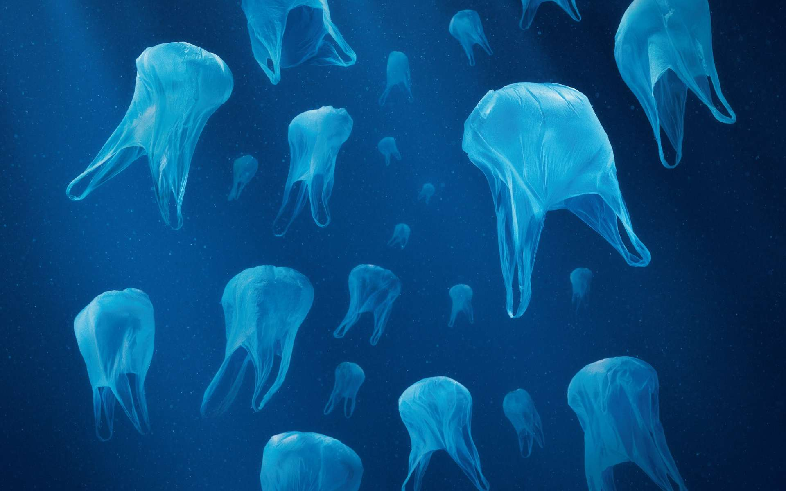 Un banc de méduses plastique
Cependant, avec le temps, le plastiques sont érodés, devenant des morceaux de très petite taille appelés micro plastiques. Ces micro plastiques sont avalés quotidiennement par la faune marine. Cette même faune est ensuite péchée et finit dans notre assiette. Cela peut provoquer chez une personne en ayant ingéré l'infertilité, des troubles du développement, des troubles hormonaux, des maladies cardiovasculaires, … .
Et cela ne sont que les effets sur l’Homme qui n’en ingère pas en très grande quantité comparé à la faune marine.
On peut donc se poser la question suivante: Cela vaut-il vraiment le coût de jeter un plastique dans la nature plutôt que de faire l’effort de le recycler?
Les Marées Noires
Une marée noire est une catastrophe écologique provoquée par l’Homme dans laquelle une grande quantité d’hydrocarbures rentre en contact avec les côtes .
Ces incidents touchent à la fois le domaine écologique et le domaine économique.
En effet, lors de ces incidents, une grande partie, voire la totalité de l’écosystème est détruit. D’une part, de part la nature des hydrocarbures, de nombreux animaux s’embourbent et finissent par mourir faute de pouvoir se nourrir ou respirer. D’autre part, les hydrocarbures sont des produits toxiques qui, même en faible quantité, provoquent de nombreux risques pour la santé des êtres vivants étant à leur contact. Enfin, dans le cadre d’un nettoyage, le pétrole est de temps en temps brûlé, réduisant les coûts de nettoyage mais abîmant l’écosystème déjà fragilisé ainsi que polluant l’air.
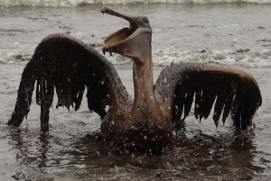 Oiseau embourbé dans le pétrole
D’autre part, si l'on regarde l'événement d’un point de vue économique, nous constatons que ce dernier provoque de nombreux coûts. En effet, les méthodes de nettoyage sont très coûteuses et requièrent beaucoup de temps. Le prix total est généralement amoindri par la compensation versée par l’entreprise responsable de la marée noire. Cependant, un nettoyage propre demande un investissement de la part de l’Etat.
Non seulement l’Etat va devoir dépenser de l’argent pour pouvoir nettoyer ses façades maritimes touchées, mais les pêcheurs verront une baisse du poisson qu’ils pêchent. De plus, ce poisson est impropre à la consommation, ce qui risque de créer une vague de chômage dans le secteur de la pêche.
Enfin, suite à la marée noire, l'afflux de touristes dans les régions côtières touchées diminuera. Cela impacte donc les complexes hôteliers et le milieu de la restauration. Un pays ayant une économie centrée sur le tourisme peut subir un plus grand choc que les autres pays.
Il est aussi important de noter que la France a été victime de 3 des 12 plus grandes marées noires de l’histoire: celle du Torrey Canyon, celle du Haven, et celle de l’Amoco Cadiz. Heureusement, un grand nombres de mesures ont été prises par les différents États, assureurs et entreprises de transport du pétrole pour éviter le plus possible de nouveaux cas.
La Pollution De L'Air
Son Processus
Bien que la pollution de l’air artificielle peut être daté jusqu'à l'époque de l’empire romain, cette dernière s’est considérablement développée suite à la révolution industrielle. Le carburant utilisé pour faire fonctionner les machines de l’époque dépend du principe de combustion. Cette combustion a relâché au cours des dernières siècle de nombreux polluants dans l’air bouleversant de nombreux écosystème. De nos jours, les carburants combustibles restent la source d’énergie principale à travers le monde.
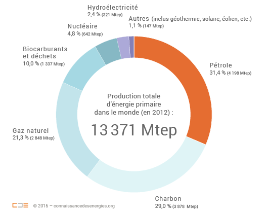 Part des différentes énergie utilisé dans le monde en Mtep (mégatonne équivalent pétrole)
D’autres parts, les déchets ont tendance à s’entasser plus rapidement qu’on ne puisse les éliminer proprement dans les décharges. Pour éviter l’apparition de décharge sauvage suite au surplus des décharges, un grand nombre d’Etat ont pour habitude de brûler ces déchets. Cette mauvaise habitude augmente encore plus les rejets de polluants dans l’air. Cette pratique est cependant interdite dans certains pays tel que la France.
De plus, les pesticides, déjà dangereux lorsqu’ils sont répandus en direction du sol, contribuent à la pollution de l’air. Cela est d’autant plus important lors ces derniers sont épandus par voie aérienne.
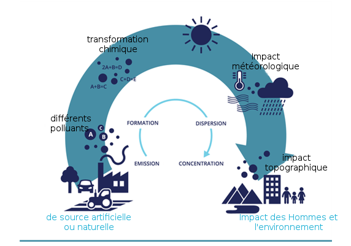Schéma du “cycle de vie” des polluants émis
Ses Impacts
La pollution de l’air a de nombreux effets. L’un des plus visible est le Smog. Le Smog est un cocktail de nombreuses particules fine sous la forme d’une brume épaisse.
D’une part, le Smog réduit la visibilité de façon significative. D’autre part, les substances contenue dans le Smog sont hautement toxique et peuvent provoquer de nombreux problèmes sanitaires. Le Smog est habituellement un événement passager. Cependant, dans le cadre de condition météorologique ou géographique exceptionnelle, c’est à dire un manque de vent où il se situe ou la présence d’une cuvette à l’emplacement du Smog, la durée de présence du Smog augmenté le rendant encore plus dangereux.
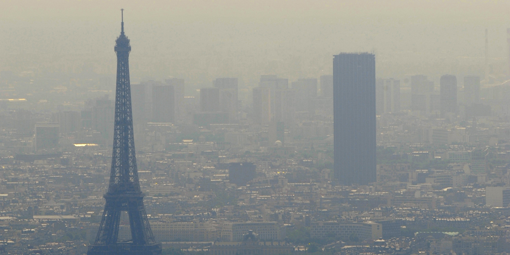 Le Smog à Paris
Cependant le Smog n’est que la partie émergé de l'iceberg. En effet, les particules toxiques sont généralement invisible à l’oeil nue. Cela veut dire que même sans la présence du Smog, nous respirons, et donc ingérons quotidiennement une grand nombre de ces particules.
Des risques vasculaires, cérébraux, pulmonaires, du coeur, du sang. En outre, cela provoque aussi des troubles de la fertilité ainsi que du développement des enfants.
Cette pollution provoque 48 000 décès prématurés par année en France. Cela provoque une dépense annuel de près de 100 milliards d’euros.
La pollution de l’air a aussi d’autres conséquences tel que la détérioration des bâtiments sur a la présence de substances corrosives. Elle entraîne aussi une baisse de 5 à 20% de la production agricole en fonction de l’espèce cultivé. Elle fait aussi varier l’acidité de l’air dans certaine zone ce qui bouleverse les écosystèmes impactés. Enfin, elle facilite le phénomène d’eutrophisation.